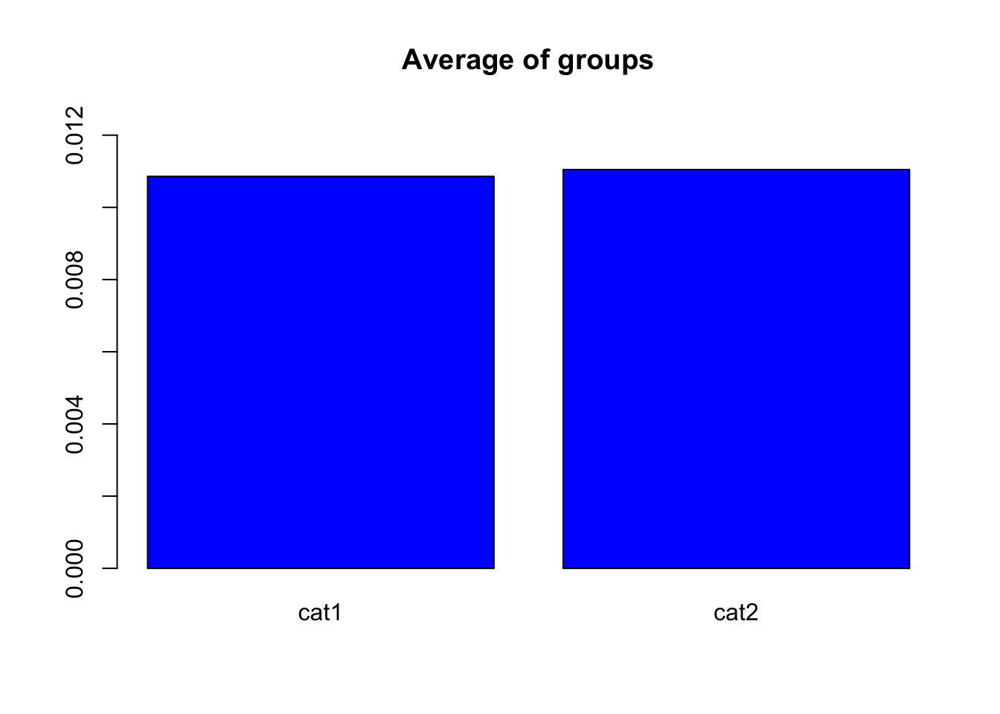
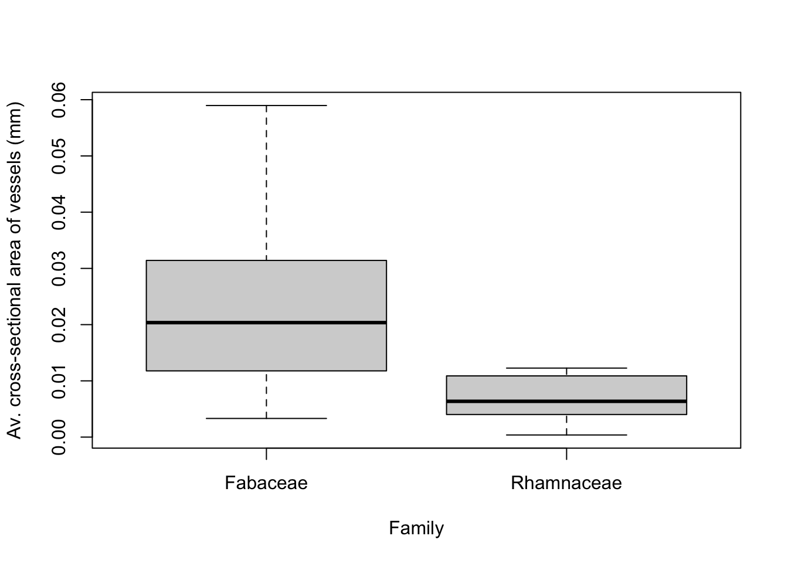

How to do the analysis in R
Let’s explore the A walk through the woods data!
It is best to make a folder on your computer Desktop where you will work on this assignment (if needed, review Best Practices).
Download the file
woods.csv(from the course BrightSpace) to the folder you made.Open and save a new R Script your folder. One of the first commands of your R Script will be to load your data. For example:
data1 <- read.csv(file = "woods.csv")- In the Console, inspect your data to check that it has loaded. For example:
head(data1)If your data has not loaded, the most likely problem is a spelling error or problems with specifying the path to woods.csv. You might try:
the RStudio way of importing your data, or
moving
woods.csvto your working directory.
- After importing the data into R, read through the metadata file (below) to better understand the data.
Metadata Overview Original Article Data used in this exerise originates from a Zanne, A. E., et al. (2010) study. The full article reference can be found below.
Columns in the data frame
Column 1: Family - The taxonomic family of the plant
Column 2: Binomial - Refers to the genus and species for each plant
Column 3: Amm - Average cross-sectional vessel area (in \(mm^2\))
Column 4: Nnn - Number of vessels per unit cross section area (in \(mm^2\))
Column 5: F - (F = \(\frac{Amm^2}{Nmm^2}\) Fraction of cross sectional area that is in vessels (in \(mm^2/mm^2\))
Column 6: logA - log10 transformation of Amm (in \(mm^2\))
Column 7: logN - log10 transformation of Nmm (in \(mm^2\))
Column 8: logF - log10 transformation of F (in \(\frac{Amm^2}{Nmm^2}\)
Column 9: Dens - Wood density measurement
Column 10: AbsLat - Average of the absolute value of latitude (in degrees)
Reference
Zanne, A. E., Westoby, M., Falster, D. S., Ackerly, D. D., Loarie, S. R., Arnold, S. E. J., & Coomes, D. A. (2010). Angiosperm wood structure: Global patterns in vessel anatomy and their relation to wood density and potential conductivity. American Journal of Botany, 97(2), 207–215. https://doi.org/10.3732/ajb.0900178
head(data1)## Family Binomial A.mm N.mm F
## 1 Rhamnaceae Krugiodendron ferreum 0.002922467 45 0.13151099
## 2 Fabaceae Tamarindus indica 0.010386891 9 0.09348202
## 3 Anacardiaceae Astronium urundeuva 0.009503318 15 0.14254977
## 4 Fabaceae Dalbergia melanoxylon 0.013273229 7 0.09291260
## 5 Fabaceae Swartzia corrugata 0.018385386 4 0.07354154
## 6 Fabaceae Caesalpinia paraguariensis 0.003848451 25 0.09621127
## logA logN logF Dens AbsLat
## 1 -2.534250 1.6532125 -0.8810379 1.35 NA
## 2 -1.983514 0.9542425 -1.0292719 1.28 10.133333
## 3 -2.022125 1.1760913 -0.8460335 1.21 14.000000
## 4 -1.877023 0.8450980 -1.0319254 1.20 4.633333
## 5 -1.735527 0.6020600 -1.1334673 1.20 10.000000
## 6 -2.414714 1.3979400 -1.0167740 1.18 NA- You will want to do some exploration of your data. See Handling the data for how to recover the names of the columns for all the data.
names(data1)## [1] "Family" "Binomial" "A.mm" "N.mm" "F" "logA"
## [7] "logN" "logF" "Dens" "AbsLat"- It is now helpful to think about the data given your knowledge of Botany. Do you hypothesize a relationship between the data in any of the columns? You might start investigating your hypotheses by making a plot, for example, showing the
Average cross-sectional vessel areaandthe number of vessels. To extract a column of the data, see Handling the data.
For the Average cross sectional vessel area, in the Console, try:
data1$A.mmBe sure to type exactly A.mm after the $. Try making your plot:
plot(data1$N.mm,data1$A.mm, pch = 19, xlab = "Average cross sectional vessel area", ylab = "Number of vessels per unit cross sectional area", col="blue")
You need to write the column names exactly as they appear in the output of names(data1) or RStudio will produce an error.
Can you make a plot of different variables, for example,
Wood densityandAverage of the absolute value of latitude?What happens if you type
plot(data1$Family, data1$Binomial)in theConsole? Why is this not a very sensible choice for something to plot?To analyze the relation between variables we can use the
cor(x,y,method = "pearson")function. See Correlation for details.
Comparing two means with a t.test
This section will give a brief overview of how to perform a sample t-test to compare the average cross-sectional vessel area between two families: Rhamnaceae and Fabaceae. This example is to illustrate the coding for the analysis; you will want to use your knowledge of Botany to formulate a hypothesis to test.
- First, produce two variables that contain the data.
Rhamnaceae = data1[data1$Family=="Rhamnaceae",]
Fabaceae = data1[data1$Family=="Fabaceae",]Note that we are using [] to extract specific rows and columns of data1. Observe that data1$Family=="Rhamnaceae" means we want all the rows where the family is “Rhamnaceae”, and the , indicates we would like all the columns. Type the following to understand more about these variables:
head(Rhamnaceae)
head(Fabaceae)
length(Rhamnaceae[,1])
length(Fabaceae[,1])The command head() reports the first 6 rows, and length(Rhamnaceae[,1]) gives the length of column 1 of the variable Rhamnaceae.
- We would like to perform a t-test to compare the means of the average cross-sectional vessel area for Rhamnaceae and Fabaceae, however, before we do this we will graph these data to observe if we expect the t-test to find a significant different in means.
Using the boxplot() function requires a specific structure of the data:
data = data.frame(Family = c(Rhamnaceae$Family,Fabaceae$Family), Area = c(Rhamnaceae$A.mm, Fabaceae$A.mm))Note that c() binds lists together, and in the the Family column of the new dataframe data, we need the value from the $Family column of the variables Rhamnaceae and Fabaceae. In the Area column of the new dataframe data we need the average cross-sectional area of the vessels $A.mm for the variables Rhamnaceae and Fabaceae. It is likely helpful to look at the form of the data to make sure nothing has gone wrong:
head(data)## Family Area
## 1 Rhamnaceae 0.002922467
## 2 Rhamnaceae 0.000380133
## 3 Rhamnaceae 0.006361725
## 4 Rhamnaceae 0.008659015
## 5 Rhamnaceae 0.012271846
## 6 Rhamnaceae 0.005026548tail(data)## Family Area
## 101 Fabaceae 0.04154756
## 102 Fabaceae 0.03300636
## 103 Fabaceae 0.03141593
## 104 Fabaceae 0.01838539
## 105 Fabaceae 0.02544690
## 106 Fabaceae 0.01327323(Note tail gives the last 6 rows). If we have made a dataframe with the correct structure, then we can use the boxplot command to visualize the average cross sectional area for vessels of plants from the families Rhamnaceae and Fabaceae.
boxplot(Area~Family, data, ylab = "Av. cross-sectional area of vessels (mm)")
Note that the rectangle for the boxplot is the interquartile range (from the 25th to 75th percentiles of our data). The 25th percentile means that only 25% of Rhamnaceae and Fabaceae species have average cross-sectional vessel areas less than these values. From this box plot, it appears that the mean of the average cross-sectional vesseal area for Rhamnaceae species is different than for Fabaceae species, suggesting that we might expect the t-test to give a significant result.
- Performing a t-test) allows us to determine if the groups are statistically different and measures the probability that an observed difference could have occurred just by random chance. Here, we want to evaluate \(\alpha = 0.05\), indicating that we are comfortable with a 5% risk of concluding a difference exists when there is no difference. If our p-value is greater than \(\alpha\), both means are not statistically different (based on the datasets).
t.test(Rhamnaceae$A.mm, Fabaceae$A.mm, alternative = 'two.sided',paired = FALSE)##
## Welch Two Sample t-test
##
## data: Rhamnaceae$A.mm and Fabaceae$A.mm
## t = -8.1351, df = 46.385, p-value = 1.762e-10
## alternative hypothesis: true difference in means is not equal to 0
## 95 percent confidence interval:
## -0.01974705 -0.01191463
## sample estimates:
## mean of x mean of y
## 0.007064109 0.022894948Given the p-value of \(1.76 \times 10^{-10}\), which is less than \(\alpha = 0.05\), we reject our null hypothesis that the mean cross-sectional area of vessels for Rhamnaceae species is the same as for Fabaceae. Therefore, our analysis suggest that the average cross-section vessel area for species of these Families are different.